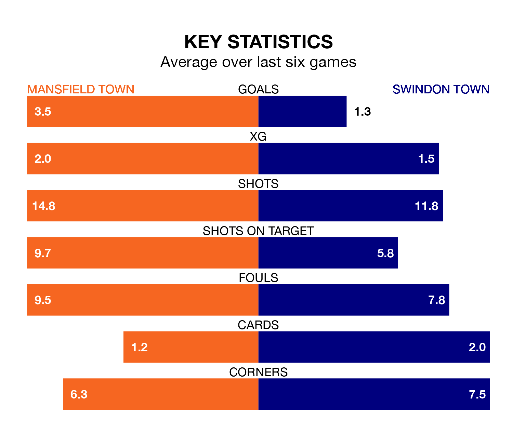

Mansfield Town host Swindon Town in Saturday's match at the One Call Stadium looking to bounce back from defeat last time out in EFL League Two.
The Stags, who sit top of the league after 35 games, fell to a 2-1 home defeat to Milton Keynes Dons on Tuesday.
They face a Swindon side who secured a draw in their last match, a 1-1 tie with Harrogate Town, and who sit 17th in the table.
With 69 goals in 35 games so far this season, Mansfield are the league's joint-highest scorers with 2.0 goals per game. And they are conceding fewer than average, letting in 31 goals at a rate of 0.9 per game.
Swindon are also above average scorers, with 1.7 goals per game, compared to a league average of 1.5. They have conceded 1.8 goals per game.
In Christy Pym, Mansfield Town can rely on one of the league's safest pair of hands. He has kept 13 clean sheets in his 35 appearances this season, and no 'keeper has prevented the opposition scoring more often in EFL League Two.
In Swindon Town's net, Murphy Mahoney has four clean sheets in 23 games. He has conceded a goal every 57 minutes, 90% more often than the 109 minutes between goals for Pym.
In the last 10 years, Mansfield and Swindon have played each other on 10 occasions. Mansfield won two of them, Swindon six, and they drew twice.
On average, the Stags scored 1.1 goals and the Robins 1.7 in those matches.
Their last meeting was on November 25, when Swindon won 2-1 at home.
The Stags are in reasonable form in EFL League Two, with four wins and two losses from their last six games.
With a win and four draws over that period, the Robins' form is worse – they have taken seven points from 18, compared to the hosts' 12.
Saturday's match will be refereed by David Rock, who has taken charge of 11 EFL League Two games so far this season, issuing three red cards and booking 40 players. He has awarded one penalty.
The last Mansfield game Rock refereed was a 2-1 home win against Walsall on October 28. His last Swindon match was their 2-0 win at home against Newport County on October 14.
Updated: 09:34 (UTC), 08/03/24